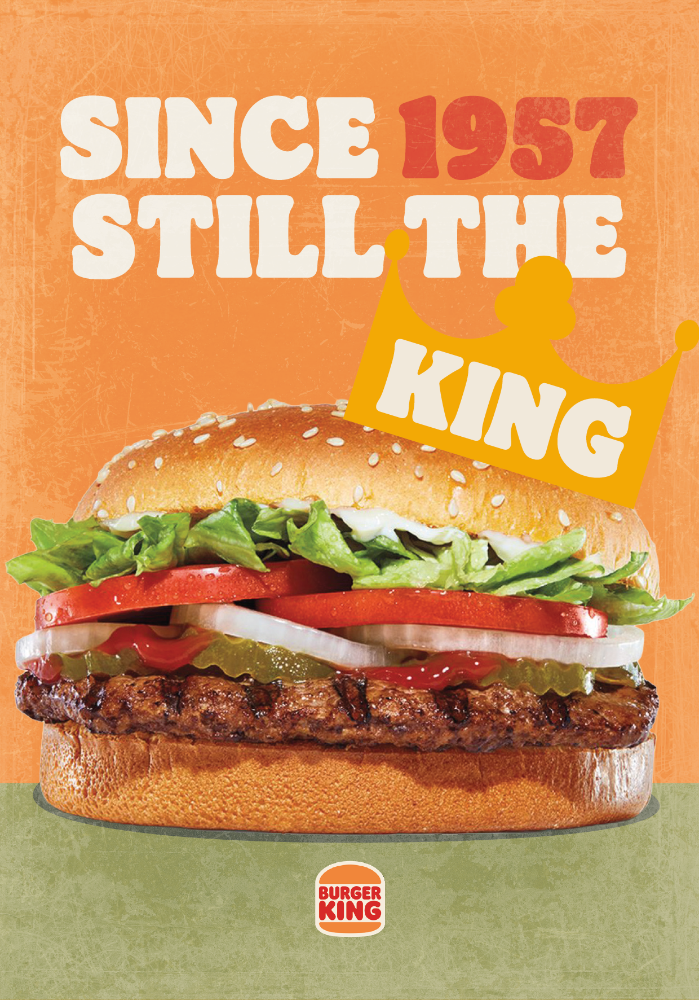

Lavoro3

Progetto grafico per una cartolina personalizzata, che andasse a promuovere il Whopper, panino di punta del Burger King, con uno stile vintage, senza però eliminare lo stile minimalista dell'azienda.

Progetto grafico per una cartolina personalizzata, che andasse a promuovere il Whopper, panino di punta del Burger King, con uno stile vintage, senza però eliminare lo stile minimalista dell'azienda.